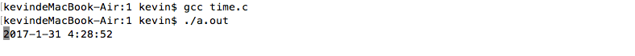

2016/10/16
Author: guoqzuo
c语言实现控制台下走动的时间
UI下时间插件很容易展现一个走动的时间，但C语言下控制台程序想要实现一个走动的时间，就需要用while(1)每隔1秒来打印了。其间我们可以开个fork用子程序来跑这个死循环。顺便延升到输出缓冲区与printf函数的问题。

初步实现
这里没有其他的操作就直接在主进程里面实现了。思路是在while(1)里每隔1s不断的打印当前时间。首先要获取当前时间,用man 3 localtime来获取时间，格式0000-00-00 00:00:00，之后就是让打印的时间总是显示在该行。也就是不换行，可以用' '来将光标移动至行首实现。代码如下:
/*
* C语言 显示走动的时间
* Sun Oct 16 14:26:55 2016
* Create by Kevin Zuo
*/
#include <stdio.h>
#include <stdlib.h>
#include <time.h>
#include <unistd.h>
int main(int argc, char* argv[])
{
while (1) {
struct tm *p;
time_t t = time(NULL);
p = localtime(&t);
printf("%d-%d-%d %d:%d:%d\n",p->tm_year+1900, p->tm_mon+1, p->tm_mday,
p->tm_hour, p->tm_min, p->tm_sec);
sleep(1);
fflush(stdout);
}
exit(0);
}问题延升
上面的程序为什么加了sleep(1)和fflush(stdout)呢? 首先如果不加sleep(1)，打印的光标会一直刷，一秒钟while(1)可以执行多次。所以需要加休眠1秒，但加了sleep(1)之后，由于标准IO(printf)都是行缓冲或满缓冲，当短时间内打印的内容无法全部输出时，就会出现缓冲，暂时不打印，遇到换行或者等缓冲区满了才会打印。如果想要实时打印就要用fflush(stdout)强制刷新输出缓冲区。printf函数是c语言库函数，其本质就是向输出缓冲区文件写入内容。可以用write来代替printf。向write这样的系统调用在用户空间无缓冲机制，写入都是实时的，所以不用fflush(stdout))。代码如下:
#include <stdio.h>
#include <stdlib.h>
#include <time.h>
#include <unistd.h>
#include <string.h>
int main(int argc, char* argv[])
{
while (1) {
struct tm *p;
time_t t = time(NULL);
p = localtime(&t);
char buf[100] = {0};
sprintf(buf,"%04d-%02d-%02d %02d:%02d:%02d\n",p->tm_year+1900, p->tm_mon+1, p->tm_mday,
p->tm_hour, p->tm_min, p->tm_sec);
write(1, buf, strlen(buf));
sleep(1);
}
exit(0);
}最后
以上的代码执行效果和上面一致，只是用了系统调用函数。如果只学了基本的C语言，看上面的内容可能会不懂，关于系统调用，可参考UNIX高级编程笔记，也就是APUE。C语言方面想要提高的，可以好好研下。